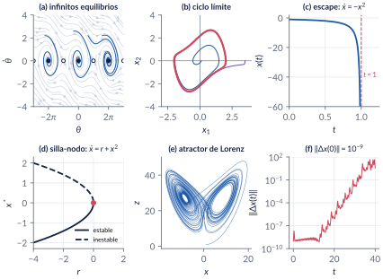
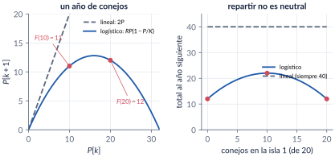
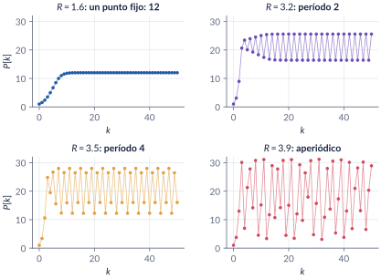
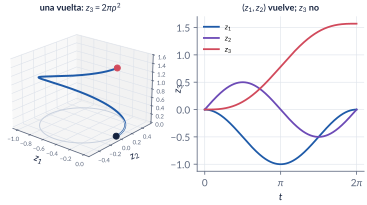
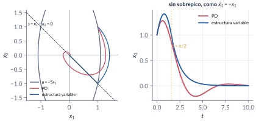

1. Introducción y motivación
Semana 1 · una clase
Casi todo lo que usted conoce de sistemas dinámicos descansa en la superposición: la respuesta a una suma de causas es la suma de las respuestas. Esta parte muestra qué se pierde sin ella. Un sistema no lineal puede tener varios equilibrios aislados, oscilar con una amplitud que no depende de la condición inicial, dejar de existir en tiempo finito, cambiar de período con la amplitud y ser caótico. Y en control, una ley lineal puede no estabilizar nada, una no lineal puede hacerlo mejor, y hay sistemas controlables que ninguna ley continua estabiliza.
Al terminar esta parte usted podrá
- Escribir un modelo en variables de estado \(\dot x=f(t,x,u)\), \(y=h(t,x,u)\), encontrar sus equilibrios y trasladarlos al origen.
- Reconocer cinco comportamientos que ningún sistema lineal puede tener: equilibrios aislados múltiples, ciclos límite, escape en tiempo finito, dependencia de la amplitud y caos.
- Explicar con un ejemplo por qué el todo no es la suma de las partes, y por qué la versión discreta y la continua de la ecuación logística no se comportan igual.
- Usar la energía para concluir algo sobre un sistema sin resolverlo, y decir qué no se puede concluir todavía.
- Dar ejemplos en los que el control lineal no basta, incluido uno en el que ningún control continuo funciona (Brockett).
- Distinguir una conclusión plausible de una correcta, que es el hilo de todo el curso.
Ruta de la clase
| Clase | Qué se ve | Capítulo | Scripts |
|---|---|---|---|
| 1 | Por qué no lineal: superposición y los conejos de dos islas. Modelos de estado, equilibrios, reescalamiento. Cinco cosas que un sistema lineal no puede hacer. La logística discreta y la continua | §1.1–1.4 | C1_Ej1, C1_Ej2, C1_Ej3, C1_Ej5 |
| (lectura) | Energía y LaSalle en miniatura; el integrador de Brockett; qué aporta lo no lineal al control; historia; cómo trabajar en el curso | §1.5–1.8 | C1_Ej4, C1_Ej6–C1_Ej9 |
Lo esencial, en una página

Modelo de estado y equilibrio (Khalil, §1.1)
Un sistema no lineal es \(\dot x=f(t,x,u)\), \(y=h(t,x,u)\), con \(x\in\R^n\). Es invariante en el tiempo si \(f\) no depende de \(t\) (no decimos “autónomo”). Un punto \(\eq\) es un equilibrio de \(\dot x=f(x)\) si \(f(\eq)=0\); con \(z=x-\eq\) se traslada al origen sin cambiar nada más. Un sistema lineal no puede tener dos equilibrios aislados.


Trampa: la logística discreta y la continua describen lo mismo
Una es dócil (dos equilibrios, monotonía, solución explícita) y la otra es caótica. En el mapa, \(R\) es un factor por generación; en la ecuación diferencial, una tasa. Discretizar no es una operación inocente.
Concluir sin resolver
Para el masa-resorte con fricción, \(E=\tfrac12kx_1^2+\tfrac12mx_2^2\) cumple \(\dot E=-cx_2^2\le0\): la energía nunca crece, y eso se sabe sin resolver la ecuación. Es el método de Lyapunov en miniatura. Pero \(\dot E=0\) en toda la recta \(x_2=0\): para concluir que el bloque se detiene en el origen hace falta el principio de invarianza de LaSalle.
Trampa: controlable implica estabilizable
El integrador de Brockett \(\dot z_1=v_1\), \(\dot z_2=v_2\), \(\dot z_3=z_1v_2-z_2v_1\) es controlable (una vuelta en \((z_1,z_2)\) sube \(z_3\) en \(2\pi\rho^2\)), pero el punto \((0,0,\delta)\) nunca es una velocidad posible: falla la condición de Brockett y ninguna realimentación suave \(u=k(z)\) estabiliza el origen.

Trampa: converge a algo, luego es estable
Con \(\dot x=x+u^3\) y \(u=-kx\), el lazo es \(\dot x=x-k^3x^3\): el origen sigue siendo inestable (\(f'(0)=1\) para todo \(k\)) y la solución converge a otro equilibrio, \(k^{-3/2}\). La ley \(u=-(kx)^{1/3}\) da \(\dot x=(1-k)x\): exponencialmente estable.

Explorador interactivo
Cuatro pestañas con los ejemplos del capítulo. Todo se calcula en su navegador (los mismos modelos de C1_Ej2, C1_Ej3, C1_Ej6 y C1_Ej7).
Retos con el explorador
- Mapa logístico: suba \(R\) lentamente desde \(2.9\). ¿En qué valor deja de converger la población? Compare con \(F'(P^*)=2-R\).
- Mapa logístico: con \(R=3.83\) aparece un ciclo de período 3 en medio del caos. Búsquelo.
- \(\dot x=x+u^3\): con la ley lineal, ponga \(x(0)=10^{-3}\). ¿Se queda cerca del origen? ¿Por qué no?
- Doble integrador: busque ganancias del PD que lleguen al 2 % antes que la ley de estructura variable. ¿Qué precio pagan?
- Lorenz: con \(\delta=10^{-12}\), ¿cuánto tiempo más se demoran en separarse que con \(\delta=10^{-9}\)? ¿Es lo que predice \(\ln(1/\delta)/0.9\)?
Códigos de esta parte
Los bloques salen directamente de los archivos del repositorio. Ejecute antes iniciarCurso. verificarCap01 comprueba los números del capítulo (34/34).
Una isla o dos (§1.1).
R = 1.6; K = 32;
Flin = @(P) 2*P; % modelo lineal
Flog = @(P) R*P.*(1 - P/K); % modelo logístico
fprintf('Lineal: una isla F(20) = %g; dos islas F(10) + F(10) = %g\n', Flin(20), 2*Flin(10));
fprintf('Logístico: una isla F(20) = %g; dos islas F(10) + F(10) = %g\n', Flog(20), 2*Flog(10));Iterar el mapa logístico (§1.4).
K = 32; R = 1.6; n = 50;
P = zeros(1, n + 1); P(1) = 1; % P(1) es P[0]
for k = 1:n
P(k+1) = R*P(k)*(1 - P(k)/K);
end
fprintf('R = %.1f: P[1] = %.4f, P[21] = %.4f, K(1 - 1/R) = %.4f\n', R, P(2), P(22), K*(1 - 1/R));Puntos fijos, ciclos y caos (§1.4).
for R = [3.2 3.5 3.9]
p = 1;
for k = 1:2000, p = R*p*(1 - p/K); end % se deja pasar el transitorio
orbita = zeros(1, 8);
for k = 1:8, p = R*p*(1 - p/K); orbita(k) = p; end
fprintf('R = %.1f: ', R); fprintf('%8.4f', orbita); fprintf('\n');
endReescalar: tres sistemas, una curva (§1.2).
casos = [1 1 0.5; 1 4 1; 2 18 3]; % [m k c]
tau = linspace(0, 20, 2001);
opc = odeset('RelTol', 1e-11, 'AbsTol', 1e-12);
Y = zeros(3, numel(tau));
for i = 1:3
m = casos(i,1); k = casos(i,2); c = casos(i,3);
w = sqrt(k/m); alfa = c/sqrt(k*m);
[~, X] = ode45(@(t, x) [x(2); (-k*x(1) - c*x(2))/m], tau/w, [1; 0], opc);
Y(i,:) = X(:,1)';
fprintf('m = %g, k = %g, c = %g: omega = %g, alpha = %g\n', m, k, c, w, alfa);
end
fprintf('Diferencia máxima entre las curvas en la variable tau: %.1e\n', max(max(abs(Y - Y(1,:)))));El período del péndulo depende de la amplitud (§1.3).
% Péndulo sin fricción, g/l = 1: T(theta0) = 4 K(sin(theta0/2)) con K la integral
% elíptica completa de primera especie; T0 = 2 pi.
for th0 = [10 45 90 170]
k = sind(th0/2);
Kel = integral(@(p) 1./sqrt(1 - k^2*sin(p).^2), 0, pi/2);
fprintf('theta0 = %3d°: T/T0 = %.4f\n', th0, 4*Kel/(2*pi));
endSensibilidad a las condiciones iniciales (§1.3).
% (e)-(f) Lorenz, sigma = 10, rho = 28, beta = 8/3
lor = @(t, x) [10*(x(2) - x(1)); x(1)*(28 - x(3)) - x(2); x(1)*x(2) - 8/3*x(3)];
o12 = odeset('RelTol', 1e-12, 'AbsTol', 1e-12);
tt = linspace(0, 40, 4001);
[~, Xa] = ode45(lor, tt, [1; 1; 1], o12);
[~, Xb] = ode45(lor, tt, [1 + 1e-9; 1; 1], o12);
d = sqrt(sum((Xa - Xb).^2, 2));
fprintf('Lorenz: |diferencia| > 1 por primera vez en t = %.1f\n', tt(find(d > 1, 1)));La energía a lo largo de una solución (§1.5).
m = 1; k = 4; c = 0.5;
f = @(t, x) [x(2); (-k*x(1) - c*x(2))/m];
E = @(x) 0.5*k*x(:,1).^2 + 0.5*m*x(:,2).^2;
t = linspace(0, 20, 4001)';
[t, X] = ode45(f, t, [1; 0], odeset('RelTol', 1e-11, 'AbsTol', 1e-12));
En = E(X);
dE = gradient(En, t); % derivada numérica de E(x(t))
fprintf('E(0) = %.4f, E(5) = %.4f, E(10) = %.4f, E(20) = %.2e\n', En(1), En(1001), En(2001), En(end));
fprintf('max |dE/dt + c x2^2| = %.1e (diferencias finitas)\n', max(abs(dE(2:end-1) + c*X(2:end-1,2).^2)));Una vuelta sube \(z_3\) (§1.5).
rho = 0.5;
v = @(t) rho*[-sin(t); cos(t)]; % entrada en lazo abierto
f = @(t, z) [v(t); z(1)*[0 1]*v(t) - z(2)*[1 0]*v(t)];
[t, Z] = ode45(f, linspace(0, 2*pi, 801), [0; 0; 0], odeset('RelTol', 1e-11, 'AbsTol', 1e-12));
fprintf('Después de una vuelta: z = (%.2e, %.2e, %.4f); 2 pi rho^2 = %.4f\n', Z(end,:), 2*pi*rho^2);Tres leyes para \(\dot x=x+u^3\) (§1.6).
k = 5; x0 = 1; opc = odeset('RelTol', 1e-11, 'AbsTol', 1e-14);
u_nula = @(x) 0;
u_lineal = @(x) -k*x;
u_nolin = @(x) -nthroot(k*x, 3); % raíz cúbica REAL (no (k*x)^(1/3))
leyes = {u_nula, u_lineal, u_nolin}; nombres = {'u = 0', 'u = -k x', 'u = -(k x)^(1/3)'};
for i = 1:3
u = leyes{i}; T = 5; if i == 1, T = 3; end
[t, x] = ode45(@(t, x) x + u(x)^3, [0 T], x0, opc);
fprintf('%-18s x(%g) = %.4g\n', nombres{i}, T, x(end));
sol{i} = [t x]; %#ok<SAGROW>
end
fprintf('Equilibrios nuevos con u = -k x: +-k^(-3/2) = +-%.4f\n', k^(-1.5));Estructura variable (§1.6). El modelo de Simulink se construye con crearModelo_EstructuraVariable.m.
k3 = @(x) 1 - 2*(x(1)*(x(1) + x(2)) > 0); % +1 si x1 s < 0, -1 si x1 s > 0
leyes = {@(x) 0, @(x) -5*x(1), @(x) -x(1) - x(2), @(x) k3(x)*x(1)};
nombres = {'u = 0', 'u = -5 x1', 'PD', 'estructura variable'};
opc = odeset('RelTol', 1e-9, 'AbsTol', 1e-11, 'MaxStep', 1e-3);
t = linspace(0, 10, 10001)';
for i = 1:4
u = leyes{i};
[~, X] = ode45(@(t, x) [x(2); u(x)], t, [1; 1], opc);
nx = sqrt(sum(X.^2, 2));
t2 = t(find(nx > 0.02*nx(1), 1, 'last'));
fprintf('%-20s t(2%%) = %5.2f min x1 = %7.3f\n', nombres{i}, t2, min(X(:,1)));
Xs{i} = X; %#ok<SAGROW>
end
s = Xs{4}(:,1) + Xs{4}(:,2); ia = find(abs(s) < 1e-3, 1);
fprintf('Estructura variable: llega a s = 0 en t = %.4f, x = (%.3f, %.3f)\n', t(ia), Xs{4}(ia,:));PD, PID, perturbación y ruido (§1.6).
m = 1; c = 1; k = 2; v = 0.5; w = 0.1; r = 1;
kP = 10; kD = 3; kI = 5;
% estado: x = (y, y', integral de e)
dyn = @(t, x, kI) [x(2);
(-kD*x(2) - kP*(x(1) + w - r) - kI*x(3) + v - c*x(2) - k*x(1))/m;
x(1) + w - r];
opc = odeset('RelTol', 1e-10, 'AbsTol', 1e-12);
[t1, X1] = ode45(@(t, x) dyn(t, x, 0), [0 40], [0; 0; 0], opc);
[t2, X2] = ode45(@(t, x) dyn(t, x, kI), [0 40], [0; 0; 0], opc);
fprintf('PD: y(40) = %.4f fórmula = %.4f\n', X1(end,1), (kP*(r - w) + v)/(k + kP));
fprintf('PID: y(40) = %.4f fórmula = r - w = %.4f\n', X2(end,1), r - w);Videos
| Video | Qué muestra | Script |
|---|---|---|
| V1.1 · Lorenz | Dos trayectorias a \(10^{-9}\): indistinguibles durante 25 segundos, luego cada una por su lado. | C1_Video_Lorenz.m |
| V1.2 · Mapa logístico | La telaraña mientras \(R\) crece y el diagrama de bifurcación que se va dibujando. | C1_Video_Logistica.m |
Problemas
Los problemas del capítulo (§1.10) tienen cada uno una trampa; las soluciones seleccionadas están en §1.11 y las respuestas a las pausas al final del capítulo.